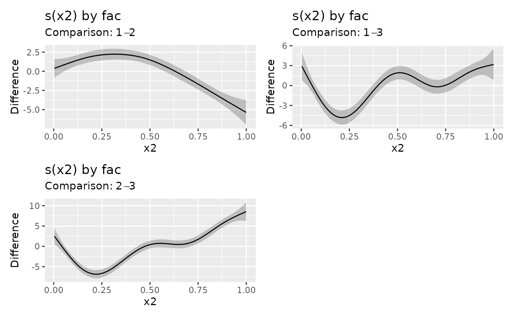
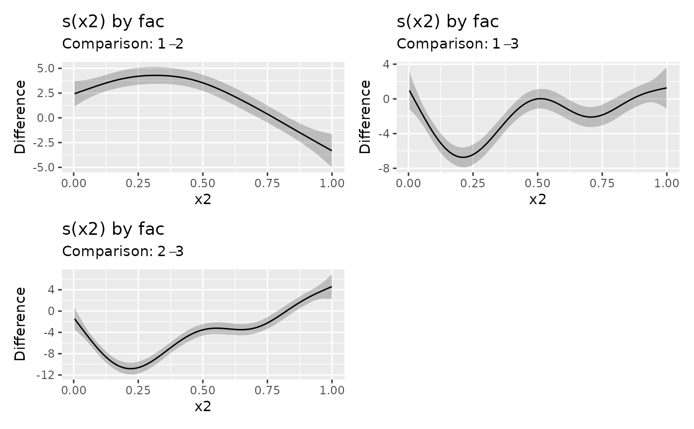

Estimates pairwise differences (comparisons) between factor smooth
interactions (smooths with a factor by argument) for pairs of groups
defined by the factor. The group means can be optionally included in the
difference.
Usage
difference_smooths(model, ...)
# S3 method for class 'gam'
difference_smooths(
model,
select = NULL,
smooth = deprecated(),
n = 100,
ci_level = 0.95,
data = NULL,
group_means = FALSE,
partial_match = TRUE,
unconditional = FALSE,
frequentist = FALSE,
...
)Arguments
- model
A fitted model.
- ...
arguments passed to other methods. Not currently used.
- select
character, logical, or numeric; which smooths to compare. If
NULL, the default, then all model smooths are factor-smooth interactions are compared. Numericselectindexes the smooths in the order they are specified in the formula and stored inobject. Characterselectmatches the labels for smooths as shown for example in the output fromsummary(object). Logicalselectoperates as per numericselectin the order that smooths are stored. Careful selection is needed because it is not allowed to compare smooths of different covariates or of different factor-by variables.For character
select, specific named smooths cane be provided, in which case, the exact names of the smooths (as given bysmooths(), for example, can be specified, andpartial_matchmust be set toFALSE.- smooth
![[Deprecated]](figures/lifecycle-deprecated.svg) Use
Use selectinstead.- n
numeric; the number of points at which to evaluate the difference between pairs of smooths.
- ci_level
numeric between 0 and 1; the coverage of credible interval.
- data
data frame of locations at which to evaluate the difference between smooths.
- group_means
logical; should the group means be included in the difference?
- partial_match
logical; should
smoothmatch partially againstsmooths? Ifpartial_match = TRUE,smoothmust only be a single string, a character vector of length 1. Unlike similar functions, the default here isTRUEbecause the intention is that users will be matching against factor-by smooth labels.- unconditional
logical; account for smoothness selection in the model?
- frequentist
logical; use the frequentist covariance matrix?
Examples
load_mgcv()
df <- data_sim("eg4", seed = 42)
m <- gam(y ~ fac + s(x2, by = fac) + s(x0), data = df, method = "REML")
sm_dif <- difference_smooths(m, select = "s(x2)")
sm_dif
#> # A tibble: 300 x 9
#> .smooth .by .level_1 .level_2 .diff .se .lower_ci .upper_ci x2
#> <chr> <chr> <chr> <chr> <dbl> <dbl> <dbl> <dbl> <dbl>
#> 1 s(x2) fac 1 2 0.386 0.618 -0.824 1.60 0.00359
#> 2 s(x2) fac 1 2 0.479 0.574 -0.646 1.60 0.0136
#> 3 s(x2) fac 1 2 0.572 0.534 -0.474 1.62 0.0237
#> 4 s(x2) fac 1 2 0.665 0.497 -0.308 1.64 0.0338
#> 5 s(x2) fac 1 2 0.758 0.464 -0.151 1.67 0.0438
#> 6 s(x2) fac 1 2 0.850 0.435 -0.00342 1.70 0.0539
#> 7 s(x2) fac 1 2 0.941 0.412 0.134 1.75 0.0639
#> 8 s(x2) fac 1 2 1.03 0.393 0.262 1.80 0.0740
#> 9 s(x2) fac 1 2 1.12 0.378 0.380 1.86 0.0841
#> 10 s(x2) fac 1 2 1.21 0.367 0.489 1.93 0.0941
#> # i 290 more rows
draw(sm_dif)

# include the groups means for `fac` in the difference
sm_dif2 <- difference_smooths(m, select = "s(x2)", group_means = TRUE)
draw(sm_dif2)

# compare specific smooths
sm_dif3 <- difference_smooths(m,
select = c("s(x2):fac1", "s(x2):fac2"), partial_match = FALSE
)